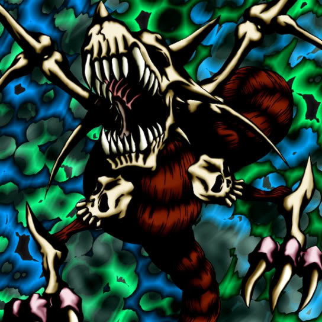

Skelgon

STATS
ATK: 1700
DEF: 1900DECK COST
Deck Cost per Card: 36Fusion List (22 Possible Fusions)
- Skelgon + Ancient Jar = Stone D.
- Skelgon + Armored Zombie = Curse of Dragon
- Skelgon + Baby Dragon = Curse of Dragon
- Skelgon + Blackland Fire Dragon = Curse of Dragon
- Skelgon + Blue-Eyed Silver Zombie = Curse of Dragon
- Skelgon + Clown Zombie = Curse of Dragon
- Skelgon + Dark Plant = Pumpking the King of Ghosts
- Skelgon + Dimensional Warrior = Sword Arm of Dragon
- Skelgon + Dragon Zombie = Curse of Dragon
- Skelgon + Electric Lizard = Twin-Headed Thunder Dragon
- Skelgon + Fiend's Hand = Curse of Dragon
- Skelgon + Fire Reaper = Curse of Dragon
- Skelgon + Flame Ghost = Curse of Dragon
- Skelgon + Griggle = Pumpking the King of Ghosts
- Skelgon + Mech Mole Zombie = Curse of Dragon
- Skelgon + One-Eyed Shield Dragon = Curse of Dragon
- Skelgon + Petit Dragon = Curse of Dragon
- Skelgon + Phantom Ghost = Curse of Dragon
- Skelgon + Pot the Trick = Stone D.
- Skelgon + Shadow Specter = Curse of Dragon
- Skelgon + The Immortal of Thunder = Twin-Headed Thunder Dragon
- Skelgon + Yamatano Dragon Scroll = Curse of Dragon